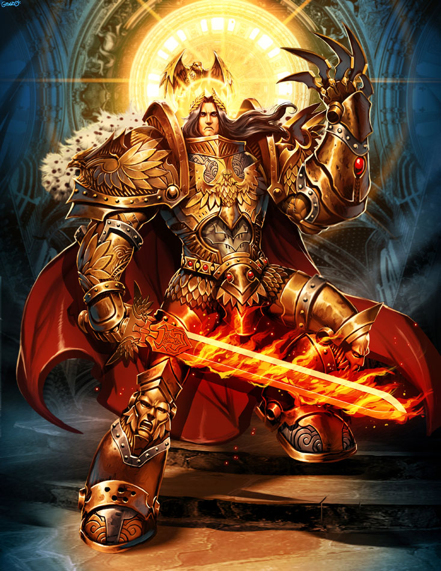
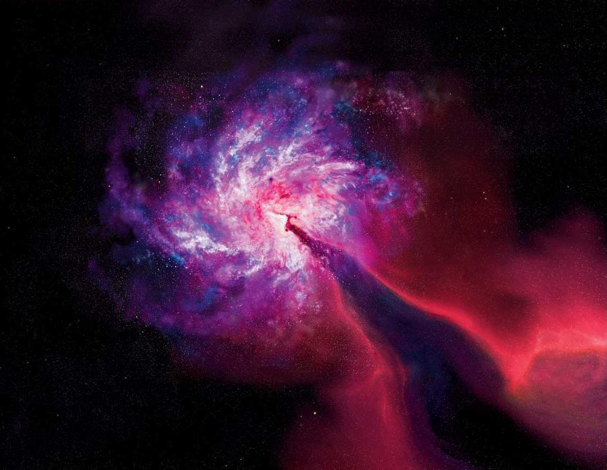
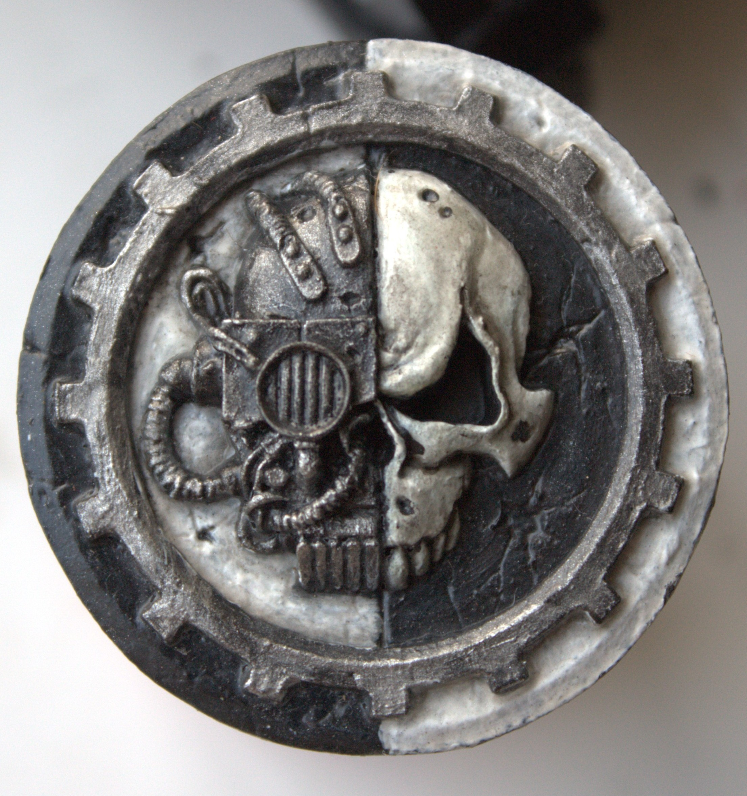

Вот уже более ста веков Император недвижимо сидит на Золотом Троне. Он - повелитель человечества и владыка миллионов миров, правящий силой своих неистощимых армий. Он - гниющий заживо труп, в котором жизнь теплится только благодаря технологическим чудесам Тёмной Эры Технологий. Он - правящий из могилы бессмертный повелитель огромной Империи Людей, которому приносят в жертву тысячи жизней каждый день. Даже в своём нынешнем состоянии, Император продолжает свою вечную бдительность. Могучие флоты пересекают кишащие демонами миазмы Варпа, единственный путь между далёкими звёздами, их путь освещён светом Астрономикона, психическим проявлением воли Императора. Огромные армии сражаются во имя Его на бесчисленных мирах. Величайшие среди его солдат - Адептус Астартес, Космические Десантники, супер-воины, созданные с помощью биоинженерии. Их братья по оружию - это легионы Имперской Гвардии и бесчисленные планетарные силы обороны, всевидящая Инквизиция и техножрецы Адептус Механикус. Здесь названы лишь немногие. Но даже всего этого множества едва хватает, чтобы сдерживать вездесущие угрозы для человечества: ксеносов, еретиков, мутантов и гораздо, гораздо худшие вещи. Быть человеком в такие времена это быть одним из бесчисленных миллиардов. Это значит жить под пятой самого жестокого и кровавого режима в истории человечества. Забудьте силу науки и технологии, как многое забылось, чтобы никогда не быть открытым заново. Забудьте прогресс и понимание, ибо во мрачной тьме далёкого будущего есть только война. Среди звёзд нет места миру, только бесконечность резни и бойни, и смех безжалостных богов

К северо-западу от Терры, далеко на краю Галактики находится место, называемое Око Ужаса. Внешне Око Ужаса действительно похоже на глаз, и представляет собой водоворот звезд, являющийся центром постоянного варп-шторма. Это одно из уникальных мест в Галактике, а уникально оно тем, что там пересекаются реальный мир и варп-пространство. Неудивительно, что именно оно было выбрано последователями Хаоса — ведь через Око Ужаса демоны могут напрямую общаться со своими последователями.

А теперь, юный адепт Механикус, когда ты осознал всю тяжесть проблем, стоящих перед Империумом Человечества, узнай же, для какой святой миссии ты был избран Богом-Машиной в почетные магосы Лингва Питонис.